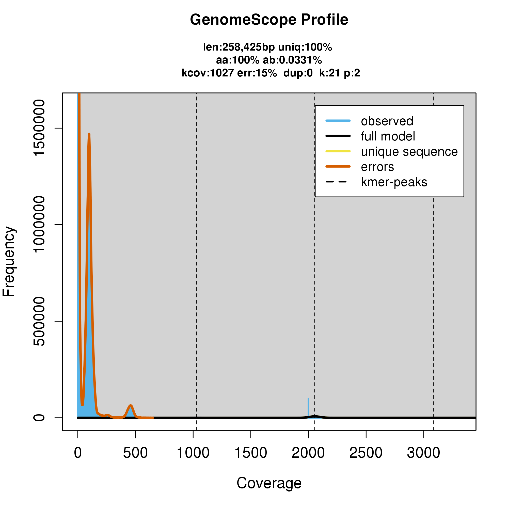

Chapter 5 Genome pre-assembly

5.1 Introduction
Assembling a eukaryotic genome using short reads used to be a time consuming process. One had to do a lot of QC checks to see if the reads had any quality issues or remaining adapters. With PacBio Hifi reads, the quality and length and adapters are not usually an issue as the PacBio HiFi platform has already done the circular consensus step so what you get is high quality long read data.
However, it's good to have a sense of whether your read coverage is adequate, and whether your genome is haploid, diploid, or polyploid. To do this we analyse the k-mers present in the HiFi reads. The broad steps are to first run a k-mer counter, and then run the resulting histograms through a tool like Genomescope.
5.2 Obtaining the read data

We are going to assemble the genome of a nematode Oscheius onirici which we expect to be 60-100 million bases or Megabases (Mb) in size because other Oscheius species are approximately that size.
First, we need to create a directory to put the data in and then change directory to it.
mkdir -p ~/eukaryote_assembly/1-preassembly
cd ~/eukaryote_assembly/1-preassemblyNow we can generate a symbolic link (i.e. shortcut) to the raw sequence data file, which will appear in the current directory:
ln -s /pub14/tea/nsc206/NEOF/Euk_assembly/data/ERR7979900.fastqIf you would like to know more about the ln command please check out this guide.
Now, check the symbolic link is in your current directory:
lsThe file name should appear in blue. If it appears in red with a black background this indicates that the file has not been found. If you see this check the file path and name carefully for typos and try again.
The file has one run of PacBio HiFi data for Oscheius onirici.
5.3 Counting reads and bases
A simple QC step is to count how many reads and bases are in the raw data. To get an estimate of how much data is in this file we will use seqkit:
seqkit stats ERR7979900.fastq
The output shows that there are almost 1 million sequences (num_seqs = 976,950) totalling 10,800 Mb of raw sequence data (sum_len = 10,801,040,319). This means that for a genome of size 60-100 Mb, we have at least 10,800 / 100 = 108X depth. The "X" can be read as "times" - i.e. the number of times we expect each base in the genome assembly to be covered by a raw sequence read. Some people also refer to sequencing depth as sequencing coverage. A good rule of thumb for PacBio HiFi sequencing is that we should have at least 30X sequencing depth for a good assembly, so a minimum of 108X depth is more than fine for our needs and we can proceed.
5.4 Counting and analysing k-mers

Another QC step that can be run very fast is k-mer analysis. K-mers are short, overlapping sub-sequences of length k from a longer sequence. For example, here are all the 3-mers (i.e. k=3) from the read AACGATT: AAC ACG CGA GAT ATT
There are many great reviews and tutorials on why k-mers work and how you can use them to analyse read sets and assemblies. But for now, we're going to use them in a simple way to estimate the size of the genome and it's heterozygosity. We will use the software kmc to do this:
kmc -cs2000 -k21 ERR7979900.fastq ERR7979900k21 .-cs<value>- maximal value of a counter (default: 255). When you have ~108X depth (from just counting reads and bases), it is a good idea to bump this up to 2,000 or even 10,000-k<len>- k-mer length (k from 1 to 256; default: 25). We picked k21 to match the default for GenomeScope which we will use in the next step. You can try different values like k25 or k31. Just remember to change the value in the GenomeScope input form as well. The end result should be roughly the sameERR7979900k21is the prefix of the output files.Use the current directory for storing temporary files
This step should take about 2-3 minutes to count all the k-mers and store them in kmc's own binary file formats with the .kmc_suf and .kmc_pre extensions.
Now use the kmc's transform tool to extract a k-mer frequency histogram:
kmc_tools transform ERR7979900k21 histogram ERR7979900k21.histotransformis the kmc_tools functionERR7979900k21is the prefix of the input fileshistogramis the command to kmc_tools to create that kind of outputERR7979900k21.histois the output histogram file name
The output file ERR7979900k21.histo is a simple text file with two columns: Column 1 has the number of copies of a k-mer of size k (21 in this case), and column 2 has the frequency, i.e. how many different k-mers have that copy number.
The next step is to view the histogram. But first we will talk about background and foreground processes.
Normally when you run a command it will run the process in the foreground. This means your command line will be locked whilst the process is running. You will only be able to type a new command in the terminal once the foreground process is finished.
This is normally wanted but not always, for example when you run a process like firefox.
To run a process in the background, so you can type and run new commands, you can add the symbol & to the end of a command.

Using firefox open the GenomeScope web page and upload the .histo file:
To upload this file click in the box where it says "Click or drop .histo file here to upload", double-click on your "1-preassembly" directory and choose the ERR7979900k21.hist file. You can leave the rest of the fields as they are and then click Submit, the Continue. After a minute or two of processing the plots will appear in the browser.
The first plot in the output should look like this:

According to this plot, the length of the genome estimated from k-mers is len:258,425bp - which is way too small for a nematode genome that we expect to be around 60-100 Mb. Something has clearly gone wrong!
The problem is that because there is so much data in our raw sequence file, the k-mer coverage on the x-axis goes all the way up to 3000, and GenomeScope automatically decided that the little peak near 2000X coverage (on the x axis) was the right peak for the genome assembly. The area under that peak was only ~258 kb so GenomeScope reported that, and it counted the real peak of the data around 100X on the x axis as low-frequency errors, shown in the orange curve.
This may happen when you are analysing your own data as well. If this happens, we can force GenomeScope to disregard the high coverage k-mers (which are likely to be mitochondria or ribosomal RNA repeats) by setting Max k-mer coverage: 1000 in this case.
Open a NEW browser tab, type http://qb.cshl.edu/genomescope/genomescope2.0/ into the address bar and upload the ERR7979900k21.histo file again. This time, set the Max k-mer coverage to 1000 and then click Submit and Continue.
After a minute or two you should see a set of plots, and the first plot should look like this:
This time the genome length estimate of len:95,828,752bp seems more in line with what we expect. GenomeScope also reports aa:99.6% i.e 99.6% of this dataset is homozygous and the plot itself is a single peak, which means that the two copies of each diploid chromosome are almost identical. If GenomeScope had reported a homozygosity % like aa:97% and shown two peaks, that would have meant a higher level of heterozygosity. Low heterozygosity in diploid or polyploid samples can aid the assembly process and so inbred lines or strains are often used when this is practical to do so. For most taxa, however, this is not possible and a higher level of heterozygosity would be expected.
For more details, see GenomeScope 2.0 and Smudgeplot for reference-free profiling of polyploid genomes
5.5 Summary

Counting reads and bases and k-mers in a set of read files can give you a good sense of whether your genome assembly is going to work, and whether you need to worry about low coverage, or highly erroneous k-mers, etc.
The length of the genome assembly should be roughly what you expect the genome size to be. It may not be the exact size of your species of interest if the sample also includes DNA from other co-bionts such as contaminants or parasites or endosymbionts.